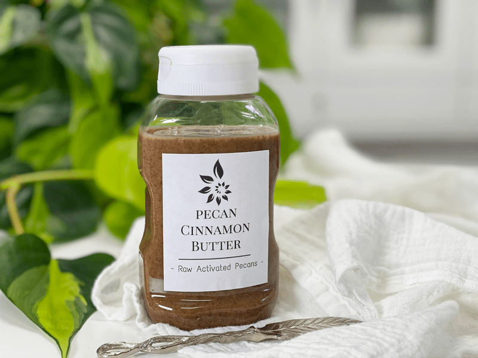
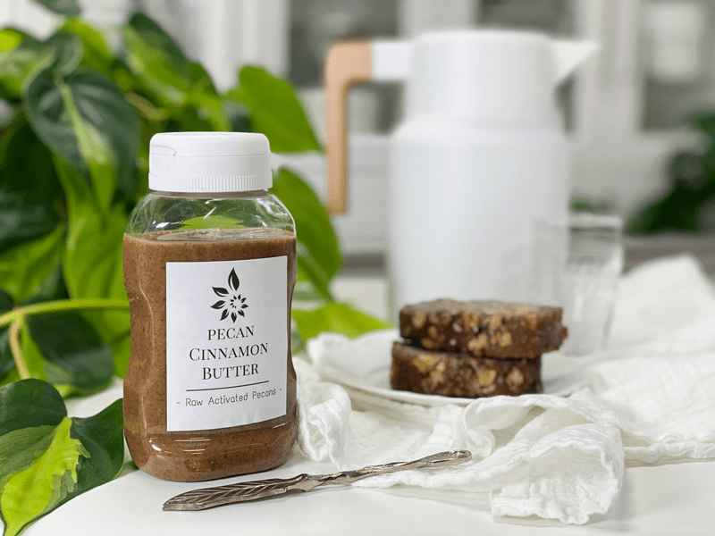

Pecan Cinnamon Butter
Let me start by saying that I should never ever make this recipe again! It is just too dangerous. As in, “I almost ate it all in two days dangerous.” Ok, that may be a bit of an exaggeration, but it’s darn near close. So, do you want to make the best tasting pecan butter? The key is to start with the best-quality pecans. Raw and organic, of course. That, along with a few essential techniques that I share down below… will set you up for total success! One thing that I love about making pecan butter is that it goes together quicker than any other nut butter. Within minutes, it is ready to enjoy!

If you are new to making nut butters, you should be aware that they do taste different than the nut butters that you find on the grocery store shelf. We will be using raw pecans, not roasted ones. Roasted nuts can give the butter more depth of flavor, but they have fewer nutrients in them. Plus, if you buy them roasted, they are usually done so in bad oils and the wrong salts.
That’s not to say that raw pecan butter won’t taste good… au contraire mon cheri, it will taste amazing… just different. Do you enjoy smooth or chunky nut butters? Either way, you have total control in creating the perfect texture that suits your pallet!

The Food Processor
It is vital to use the right ratio of nuts to the size of your food processor. I own a 16 cup Breville food processor, and it easily handles 4 cups of nuts. It could stand a bit more, but this amount makes the perfect amount for our household. There needs to be enough room for the nuts to move around to convert to butter. If you own a 14 cup processor, you should be safe with 2-3 cups of nuts. The bottom line is… if you use too many nuts for the size of your machine, you risk burning out the motor. If you use too little, there won’t be enough volume to keep it all spinning.
Speaking of burning out the motor… it is best to use a high-power food processor for this task. Anything less than, could produce a grittier consistency or overheat the nut butter, and the machine just might give up the ghost.
Within minutes the pecans loosen into the vicious goodness we all know and love in nut butter! It’s good to know too that certain nuts and seeds take longer than others, so never compare one nut butter experience to another. With my machine, it took two half minutes (!) to create this butter. I use the Breville Sous Chef Food Processor, which I absolutely love. It’s a 16 cup processor with 1200 watts of peak power, which has the same horsepower as my Vitamix Pro.
You can use a high-power blender for this job, but frankly, I find it much less “work” in my food processor. It seems that having a wider base in the food processor bowl prevents me from having to slave over the blender, where I have to really work to keep the nuts moving.

Tastes AMAZING on my raw Banana Walnut Bread.
The Benefit of Making Nut Butters
- It is less expensive. Ariston nut butters are very expensive.
- You control the quality and freshness of the nuts.
- It’s up to YOU as to what else goes into the nut butters that you make — no need for extra oils or sugars.
- You can tailor the flavoring to your liking; add vanilla, cinnamon, etc.
How to Enjoy Pecan Butter
It goes well with toast and sliced bananas in the morning, stirred into oatmeal, mixed with overnight oats, drizzled over fruit, add a dollop to your smoothie bowl, OR even just scooped right from the jar! Spread a thin layer on the next tray of brownies you made? How divine would that be? Tastes AMAZING on my raw Banana Walnut Bread. It should be noted that Pecan Butter has a thinner viscosity than other nut butters. IF you wanted to thicken it up and bump up the nutrients, add a tablespoon of ground flaxseeds. I hope you enjoy this quick and delicious recipe. blessings, amie sue
Ingredients:
Yields 2 cups
- 4 cups (410 g) raw pecans, soaked & dehydrated
- 2 tsp (6 g) ground Ceylon cinnamon
- 1 tsp (7 g) Himalayan pink salt
Preparation:
- Make sure that you followed the process for soaking and dehydrating the pecans. DO NOT use wet pecans for this; it won’t work.
- Place the pecans, cinnamon, and salt in the food processor, fitted with the “S” blade.
- My pecans came in small chunks. I usually purchase nuts in broken pieces to save money.
- Stop the machine periodically to scrape down the sides of the bowl, to keep everything blending evenly.
- Every machine works differently, so the processing time will always vary. It depends on the strength and size of your food processor and how many nuts you are processing.
- My machine took 2 minutes and 30 seconds to create this silky texture.
- No matter how tempting it is, NEVER add water to your nut butter, it will produce a pasty, gritty result and it will spoil quicker.
- There is such a thing as OVER-PROCESSING, which will release TOO much of the natural oils, making it really oily.
- Pecan butter is thinner than most nut butters.
- I store my butters in the fridge to extend the shelf life and to avoid the nuts from going rancid.
- When stored in the fridge, the butters will become much thicker. If you have the time, you can allow it to warm to room temp to help soften.
- Store excess butter in the freezer. Pour the butter into candy molds or ice cube trays. After they are frozen, remove and store in an airtight, freezer-safe container for approximately 4 months. Enjoy right out of the freezer for a mid-afternoon snack.
- With a rich, hearty flavor that stands up well in recipes.
© AmieSue.com